论文图包与科学图注
2026-10-15 · 19组44文件 · 仅复制既有图 · 未重跑实验/推理
详细来源、批次、单位、统计限定见 FIGURE_CATALOG.md；逐文件哈希见 FIGURE_PROVENANCE.csv。
F01 · 延迟一致的候选预测与门控选择流程
方法草图；可据此重新排版，不是实验结果 / 图4-1
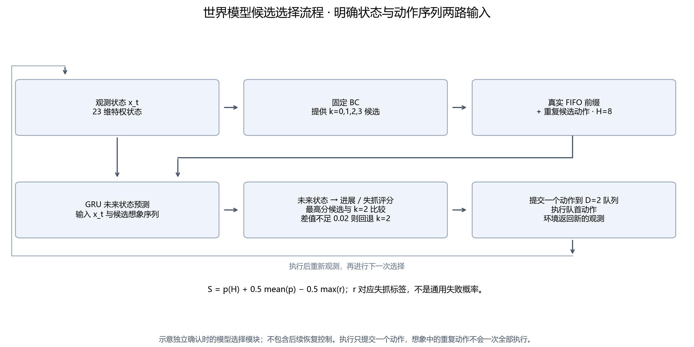
基于23维含物体真值的低维状态，固定BC输出k=0、1、2、3四个动作块索引候选；将真实D=2 FIFO前缀及后续重复候选组成H=8想象序列，输入GRU预测未来状态并估计进展与失抓评分。评分S=p(H)+0.5 mean(p)−0.5 max(r)，与k=2分数相比不足0.02时回退；每次只提交一个新动作，并在执行队首动作后重新观测。本图对应原世界模型确认，不含后续共享恢复。
限制：不是实际预测轨迹；r不是通用失败概率；k=2是动作块索引，不是单独训练的最佳模型；本图不证明性能。
F02 · 三个训练种子的固定训练/开发集误差演变
主图候选 / 图6-1

列为随机种子17、23、41，横轴为已完成优化器更新次数250至3000，每250步一份已保存权重，共36个checkpoint；行分别为全固定集总损失、归一化23维状态MSE及物体位置平均欧氏误差(mm)。总损失=MSE+进展BCE+0.5风险BCE+0.2排序损失。蓝实线为160组/20父轨迹训练集，橙虚线为64组/8父轨迹开发集，竖点线为原选定的2750、1250、2750步。曲线由10月14日既存CPU离线复核得到；本次打包未重新推理。
限制：不是随机批次日志曲线、不是epoch、不是独立测试集或闭环成功率；不能根据此图再改原确认模型。
F03 · 稀疏开发组对候选选择遗憾的影响
讨论/附录 / 图7-1或附图A-1
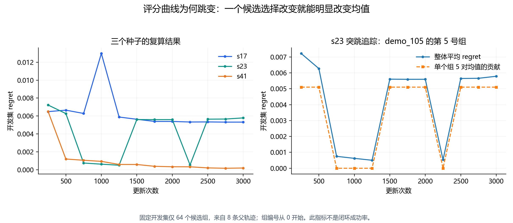
左图为三个种子的64组开发集平均regret随更新次数变化，regret定义为同组最大真实短期分数减去模型argmax候选的真实分数。右图比较s23整体均值与全局组5(demo_105、point=195)对均值的贡献regret_5/64，编号从0开始。该组在step1500贡献约0.005103，整体约0.005604，约占91%。数据来自10月14日既存checkpoint复核。
限制：不是训练发散或闭环成功率的直接证明；相邻点连线没有表示每一次更新都被观测；不能从单组支配推断唯一因果机制。
F04 · 三个训练种子的开发集消融结果
主图候选 / 图6-2

固定30个开发起点，在无噪声与位置执行噪声σ=0.05下，比较BC k=2、Full、无排序Plain、参数近似匹配Direct、仅预测+物理代价、部署去风险评分与去门控。除固定BC外为种子17、23、41均值；点为均值，横线为原分析对父轨迹和种子交叉配对bootstrap得到的描述性95%区间。每条件BC成功25/30、24/30，Full均值78.89%、82.22%，Plain80.00%、84.44%。
限制：不能称独立确认；去风险评分没有去掉训练风险监督；仅预测模型全程回退k=2，相同成功率不证明预测器提高控制；物理代价尺度不同，不能视为纯单因素评分消融。
F05 · 冻结方法在60个新起点上的独立确认成功率
主图候选 / 图6-3
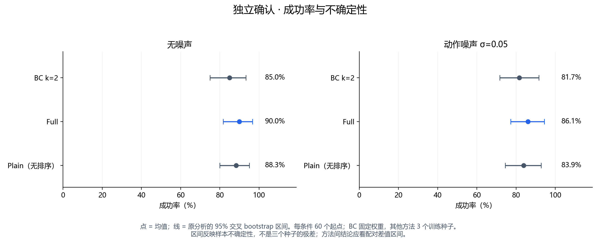
原世界模型确认批次confirmation_20261012_01：同60个冻结后新原生起点、两个共享起点的噪声条件，400步预算、D=2、H=8、K=4，BC固定权重，Full/Plain分别使用17、23、41三个固定训练种子；14任务共840次执行，独立起点数仍为60。无噪声BC/Full/Plain为85.00/90.00/88.33%，噪声0.05为81.67/86.11/83.89%。点为成功率均值，线为20000次起点与种子交叉bootstrap的描述性95%区间。
限制：三个种子成功数相同不意味着无不确定性；不能从两个单独区间是否重叠判断配对差异；此图不含规则恢复，不能与v5不同批次直接相减。
F06 · 原世界模型无噪声确认的逐种子配对计数
附录 / 附图A-2a
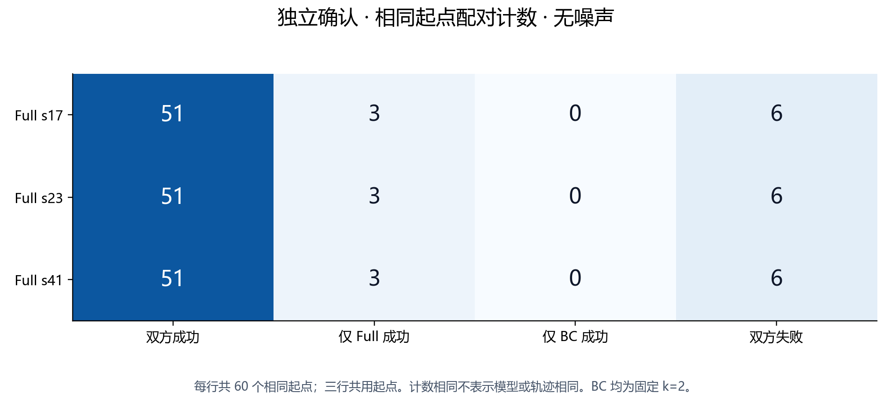
原确认同60起点；列为双方成功、仅Full成功、仅BC成功、双方失败，三行分别s17、s23、s41，均为[51,3,0,6]。BC为同一固定k=2基线，三行共用起点，成功集合相同但步骤向量和权重不同。
限制：三行不是180个独立起点；本批零退步不能保证所有状态安全；色深不是另一个指标。
F07 · 原世界模型噪声确认的逐种子配对计数
附录 / 附图A-2b

原确认同60起点、执行位置噪声σ=0.05，BC固定k=2。s17与s23四类配对数均为[49,3,0,8]，s41为[49,2,0,9]；列顺序为双方成功、仅Full成功、仅BC成功、双方失败。所有方法同一起点使用同一逐步噪声序列。
限制：只覆盖每起点一个冻结噪声实现，不能推广所有噪声种子；三行共用起点。
F08 · 双方成功交集的配对完成步数差分布
补充主图/附录 / 图6-4或附图A-3

原世界模型确认，横轴为Full完成步数减BC k=2完成步数，负值表示Full更快；纵轴为经验累计比例。两条件分别使用双方均成功的交集，各种子无噪声n=51、噪声n=49。阶梯来自整数步数，没有平滑或剔除离群点。无噪声三个种子中位差为0、1、−1步；噪声下均为0。
限制：成功交集存在条件选择，不能代表所有起点效率或把失败400步直接当真实完成时间；不能据中位数零证明等效。
F09 · 持续性基线与学习预测器的位置RMSE
主图候选 / 图6-5
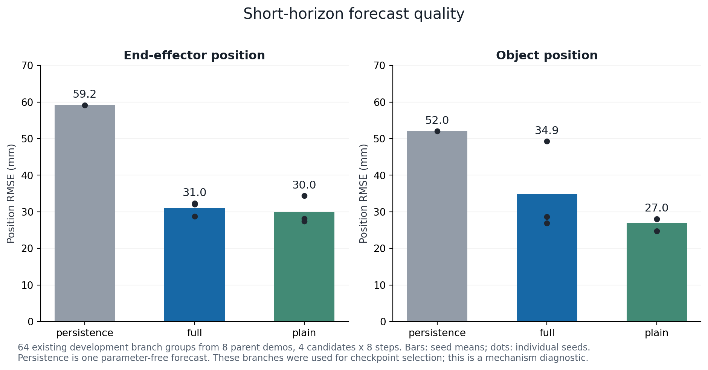
使用既有开发64组、8父轨迹，每组4候选×8预测步。位置RMSE定义为1000√mean(||x_hat−x||²)，不是逐样本欧氏距离的算术均值。Full/Plain柱为17/23/41三个训练种子RMSE的算术均值，点为各种子，持续性为一个无参数预测器(未来状态恒为当前)。末端RMSE持续性/Full/Plain=59.1708/31.0427/29.9575 mm；物体=52.0276/34.9498/26.9733 mm。
限制：这些分支参与过选点，不是独立泛化测试；三种子均值不是把所有误差先合并再开方；不能据位置RMSE直接断言闭环成功更高或排序有效。
F10 · 原世界模型确认的配对成功率差值
主图候选 / 图6-6
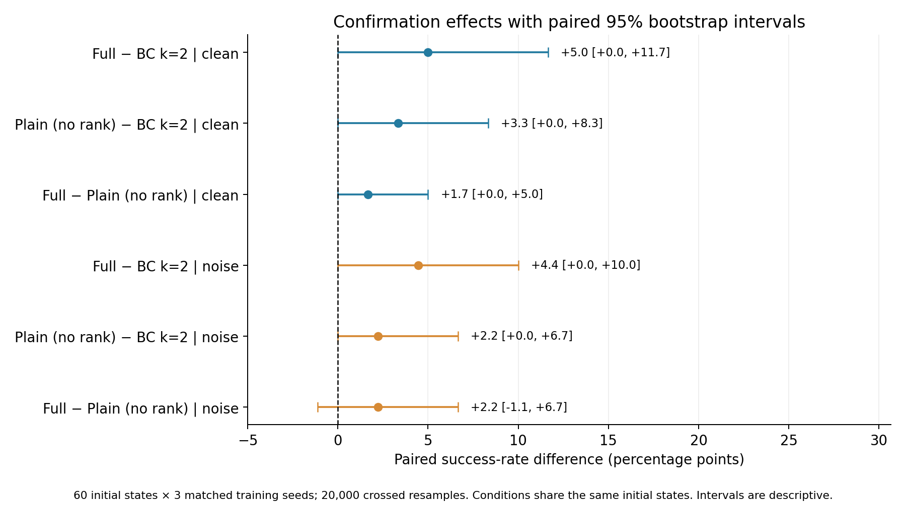
原确认60个新起点、Full/Plain三种子、固定BC k=2，无噪声和σ=0.05分别绘制。点为左方法减右方法成功率百分点差，横线为20000次起点与种子交叉配对bootstrap描述性95%区间。Full−BC分别+5.00[0,11.67]、+4.44[0,10.00]；Full−Plain分别+1.67[0,5]、+2.22[−1.11,6.67]。预设两条件等权联合Full−BC为+4.72[0.56,10.28]，Full−Plain+1.94[−0.56,6.11]；联合值不在此图内，应在表格/正文补报。
限制：区间是逐项描述性区间，非多重比较同时区间；分条件触零；没有证明排序可靠优于Plain；不能把此无恢复批次用于v5直接归因。
F11 · 持续性与真实短期评分oracle对照
主图候选 / 图6-7a
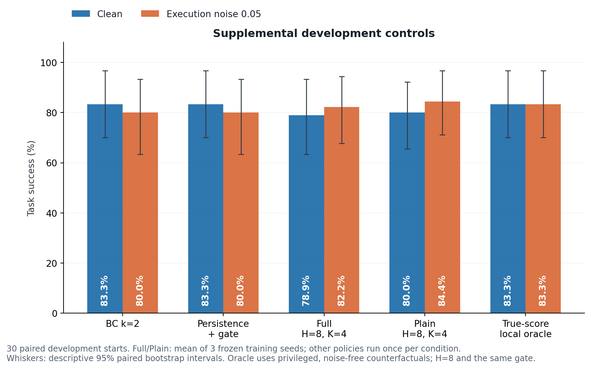
同30开发起点、400步、D=2，clean与σ=0.05两条件。Full/Plain为三个冻结种子均值，BC、持续性和短期oracle各一次/条件。BC与持续性成功25/30、24/30；Full78.89/82.22%，Plain80.00/84.44%，真实短期oracle25/30、25/30。横线为原配对bootstrap描述性95%区间。oracle每步从完整相同状态模拟4候选各8步，以真实进展/失抓标签评分，仍保留0.02门控与k=2回退。
限制：oracle是使用真实未来的诊断，不可部署，也不是长期成功率数学上界；噪声执行下oracle使用名义无噪声未来；开发对照不是独立确认；相同成败的[0,0]bootstrap不证明总体等效。
F12 · 预测时域与候选数量敏感性
主图候选 / 图6-7b
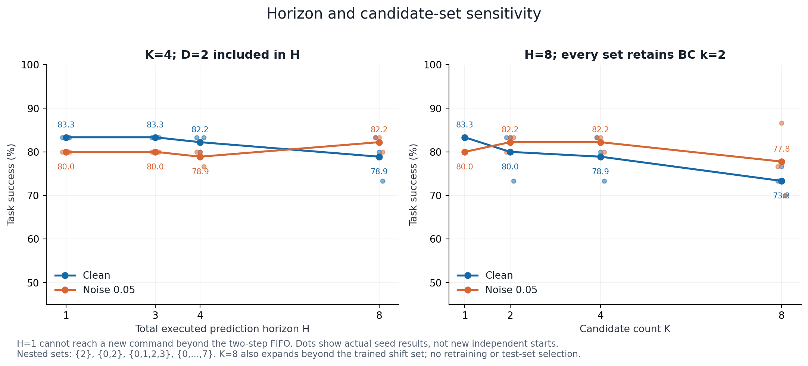
同30开发起点、两噪声条件、Full冻结三种子；左图H=1/3/4/8、K=4，H包含D=2 FIFO；右图H=8，候选集合为K=1:{2}、K=2:{0,2}、K=4:{0,1,2,3}、K=8:{0,…,7}。曲线为均值，散点为实际种子值；K=1为固定策略不伪造三种子。H=1看不到新候选执行、全程回退；H=3改选约0.6%；K=8超出原训练候选0…3支持范围。
限制：不是独立确认或只增加计算预算的纯因果比较；纵轴45—100%截取，视觉差距不能代替绝对值；散点不是新增独立起点。
F13 · 逐预测步的平均欧氏位置误差
附录 / 附图A-4
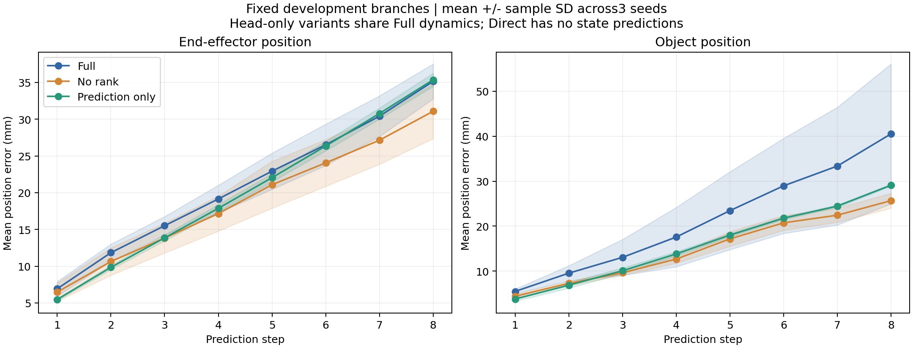
固定开发64组、8父轨迹，横轴预测步1至8；每个训练种子先对各候选的欧氏位置误差取均值(mm)，再绘制三种子均值及±样本标准差(ddof=1)。比较Full、Plain(无排序)、仅预测。此图为mean(||error||)，与F09/F19的√mean(||error||²)不是同一指标。评分头续训/校准共享Full动力学，所以不重复绘制；Direct无状态预测。
限制：阴影是3个种子的样本标准差，不是95%置信区间或父轨迹抽样误差；不是独立测试。
F14 · 共享恢复版本的原生独立确认成功率
主图候选 / 图6-8
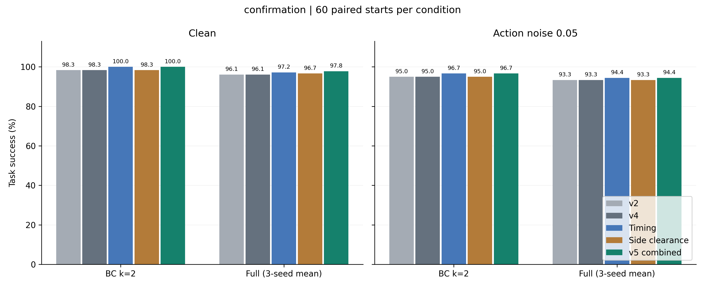
v5新确认批次，60个冻结后新原生起点，五版v2、v4、时间T、侧倒间隙S、组合TS(v5)，BC k=2和Full三固定种子分别评估，clean与σ=0.05两条件。共2400执行，每版480执行来自60起点×[1固定BC+3固定Full]×2条件。总成功数457、457、463、458、464；v5为96.67%。v5 BC为60/60、58/60，Full为176/180、170/180；图中Full柱为三种子均值，不是180个独立起点。
限制：不是原世界模型840回合批次，不能跨批次直接相减；此图柱没有不确定区间，应配F15；共享规则收益不是世界模型预测变强；没有v5同批关闭恢复组。
F15 · v5相对v4的起点配对效应与模块消融
主图候选 / 图6-9
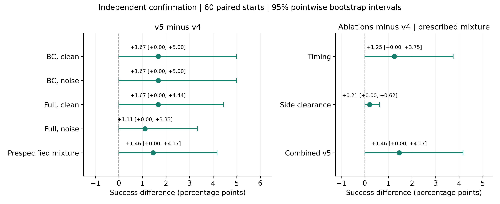
与F14同一60新起点；左侧为v5−v4各基础策略/噪声条件及预设八执行混合差值，右侧为T、S、TS相对v4混合差。混合权重按1个BC与3个固定Full种子、2条件共八执行等权，不是BC/Full两个家族等权。v5整体+1.46个百分点[0,4.17]，T+1.25[0,3.75]、S+0.21[0,0.625]。以起点为重采样单位20000次bootstrap，固定随机种子20261016；三个训练种子在此作为固定权重，区间不包含任意重训不确定性。
限制：逐项95%区间触零、未多重比较校正，不能声称普遍/显著优越；不是三个种子标准差；不能只报7次而忽略独立起点只有2个。
F16 · 独立几何分层压力测试
主图候选 / 图6-10
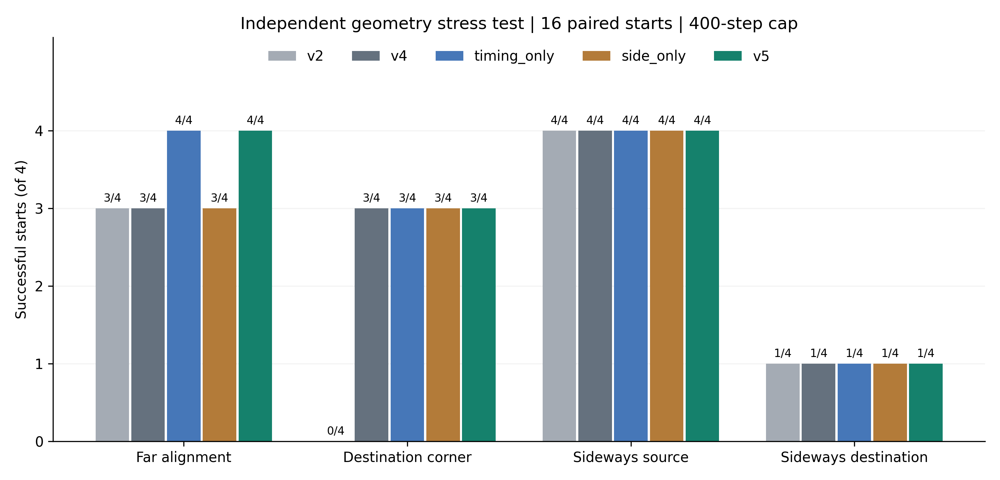
16个冻结后新人工几何起点，每类4个：远端对齐、目标角落、源箱侧倒、目标箱侧倒。使用静止张爪提议，在第80控制步强制恢复，400步上限；五版共80执行，不使用BC/Full种子作为额外独立样本。v2/v4/T/S/v5总成功8/11/12/11/12；v5四层为4/3/4/1(各/4)。
限制：人工分层每类4例，不能当真实场景发生频率或与原生确认合并；静态间隙可行不等于路径无碰撞/抓持稳定。
F17 · 剩余预算控制的已知案例阶段时间线
已知开发案例图 / 图5-2或附图B-1
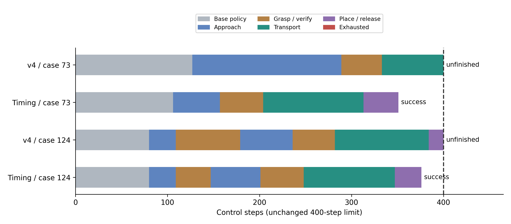
从pilot_b既有demo_73和demo_124日志及当时精确物理回放提取，分别比较v4与时间模块T。色块合并NORMAL、接近、抓持验证、搬运、放置释放等阶段，横轴为控制步，400步虚线为预算上限；T在351、376步成功，v4均400步未完成。图为已知小测试案例，不是新原生确认demo_10000029。
限制：事后选出的已知开发案例不能证明总体收益；本次独立原生确认收益主要来自预算紧张下的移动安排，不能把提前启动一并当作新确认已证明有效。
F18 · 世界模型与共享恢复的既有四组效应分解
事后描述性证据 / 附图B-2或图6-11
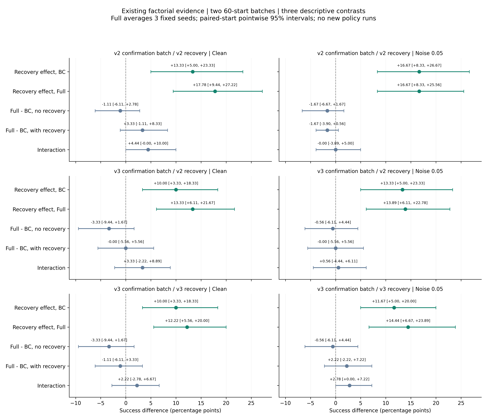
对已有v2/v3确认的两批各60起点进行事后描述分析；三行分别为v2批次的v2恢复、v3批次的v2恢复、同一v3批次的v3恢复。四组为BC/Full×关闭/开启同版恢复，Full平均三个固定权重；展示恢复对BC/Full的效应、无/有恢复时Full−BC，以及交互差分。每行两列为clean/σ=0.05，线为同起点配对bootstrap逐项描述性95%区间。后两行共用v3起点，不能算三批独立数据。
限制：不是新预注册确认，不是v5恢复四组；不能将v2/v3无恢复与v5开启恢复拼成最新交互检验；三个训练种子为固定权重，不代表任意重训。
F19 · 开发预测位置RMSE的简洁表达
备选主图，与F09择一 / F09的简洁替代，不重复编号
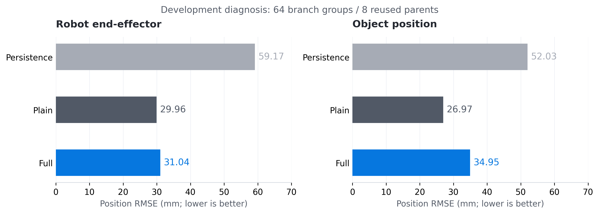
与F09完全同源：64组/8父轨迹的既有开发分支、Full/Plain三固定种子RMSE均值、无参数持续性单一预测器；末端59.17/29.96/31.04 mm、物体52.03/26.97/34.95 mm(依次持续性/Plain/Full)。此图为横向均值条，不展示各训练种子点。物体RMSE相对持续性降低32.8%来自同一数据计算。
限制：与F09是同一证据，不能计两次实验；不是独立泛化或成功率；要讨论种子离散时选F09或表格。